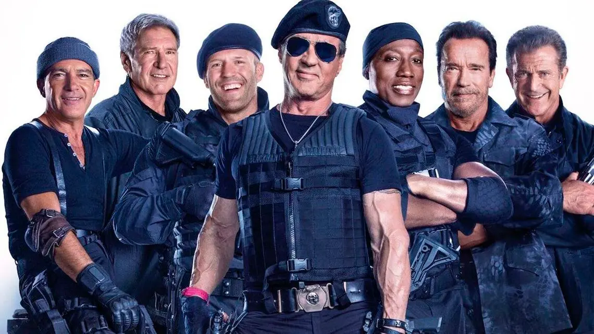

Acerca de nosotros
Historia
Ante la masividad de los medios audiovisuales y el estallido de las plataformas de streaming, un grupo de entusiastas cinéfilos se encontró en un ambiente sumamente hostil para el consumidor casual, aquel que solo desea pasar un rato de distracción, una tarde de relax, ver una película indistintamente de su origen, género o incluso orden cronológico (en el caso de esta pertenecer a una saga) no encuentra una satisfacción a su necesidad. ¿Por qué decimos esto? Las empresas de entretenimiento se encuentran actualmente en una guerra de streaming, una inmensa cantidad de plataformas en las que un casual debe indagar, buscar y sentirse abrumado ante tal cantidad de opciones, no sin antes abonar la cuota correspondiente que demandan todas estas plataformas, es por eso que decidimos crear esta opción, más amigable, intuitiva y sobre todo con un sofisticado sistema que reconoce el algoritmo e interacción del usuario a fin de dar mejores recomendaciones y alivianar lo que a veces puede ser una exaustiva búsqueda entre las opciones a ver.
¿Quiénes somos?

Maximiliano Giordani
Ideólogo de esta iniciativa. Gran aficionado del cine al punto que decidió emprender esta causa sin conocimientos previos que fue adquiriendo sobre el camino, un intelectual del arte y programación.
Pablo Maidana
Artista cinéfilo y músico. Pablo siempre fue un dedicado en la música y encontró una nueva forma de admirarla desde las emociones que puede generar en un largometraje. A fin de poder compartir su visión sobre la música y el cine decidió unirse en este proyecto y trabajar para todo lo que ayude al enfoque de la música desde una visión cinéfila.
Santiago Maidana
Un verdadero amante del cine, de los géneros en su totalidad, desde lo mas comercial hasta lo mas indie y/o under que los festivales de cine independiente pueden ofrecer. Santiago es una gran entusiasta de la comunidad, viene de numerosos proyectos comerciales y publicitarios con una basta experiencia a fin de hacer crecer esta comunidad para gente que quiera compartir y debatir sobre cine en todos sus escalafones.
Enzo Campos
Último integrante en unirse al grupo, Enzo es un aficionado del cine comprometido con la fotografía, las camáras, el enfoque, escenarios, vestuarios y la actuación, un entusiasta de los mensajes que desean transmitir los directores en sus creaciones, es asi que vio la oportunidad de ayudar a crear una gran comunidad donde pueda compartir su afición.